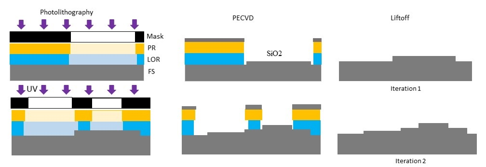

Additive diffractive optical elements fabrication by PECVD deposition of SiO2 and lift-off process
Hadi Amata, Qiang fu, Wolfgang Heidrich
SPIE Digital Optical Technologies, 2023

Fabrication of 16 level frenel lens. Each iteration creates 2-level microstructures on the previous profile by
applying lift-off lithography followed by SiO2 deposition. By repeating the fabrication cycle 4 times, one can obtain 16
levels fresnel lens. PR: photoresist. LOR: lift-off resists. SiO2: Silicon dioxide. FS: fused silica. UV: ultra violet.
Abstract
Diffractive optical elements (DOEs) gradually start replacing traditional refractive optics in many applications.
The growing interest in DOEs is mainly because of their flexibility in light manipulation with a small form
factor and their ability to combine simultaneously optical and computational functions into a single part by
applying the software-hardware co-design approach. Two main methods are widely used to fabricate DOEs.
The first method is the etched-based method that combines photolithography and reactive-ion etching (RIE).
The second method is additive fabrication, which combines metal deposition and nanoimprinting (NIL). Both
methods have many drawbacks. The RIE methods suffer from issues like lags in the etched depth when the
feature sizes differ in the same pattern (RIE lags), high surface roughness, and aspect ratio-dependent etching
rate. The second method could produce high-resolution micro-optics. However, the technique could suffer from
poor adhesion of the patterns with the substrate and poor uniformity across large areas. Here we propose a new
way to fabricate multi-level DOEs by directly growing an optically transparent material on a glass substrate.
The method combines the deposition of Silicon dioxide (SiO2) by Plasma-enhanced chemical vapor deposition
technique (PECVD) and bi-layer lift-off. We provide evidence of the effectiveness of the fabrication method by
comparing a 16-level Fresnel lens fabricated by the RIE method with another lens fabricated by the proposed
method. The characterization results show that with the proposed method, the surface roughness is lower, and
the depth is uniform. Furthermore, the optical test shows a reduced haze effect.
Paper
Paper [Hadi2023SPIE.pdf ~2.10 MB]
Citation
@inproceedings{Hadi2023SPIE,
author = {Hadi, Amata and Qiang, Fu and Wolfgang, Heidrich},
title = {Additive diffractive optical elements fabrication by PECVP deposition of SiO2 and lift-off process},
book title = {Digital Optical Technologies 2023},
volume = {12624},
volume = {12624},
year = {2023},
organization = {International Society for Optics and Photonics}
}